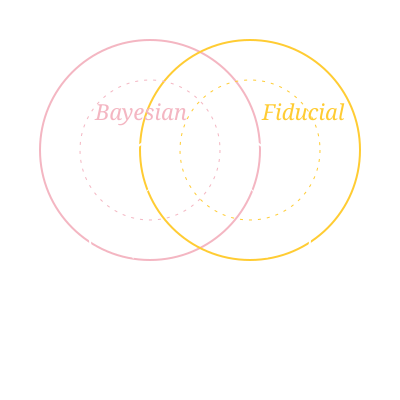

11
The Eleventh Bayesian, Fiducial & Frequentist Conference
Important dates CommitteesWelcome to BFF11
BFF11 brings together statisticians, data scientists, and philosophers of science to discuss the foundations of statistical inference and the methods built on them — across Bayesian, fiducial, and frequentist perspectives.
Since 2014, the BFF conference series (“Bayesian, Fiducial and Frequentist = Best Friends Forever”) has fostered exchange among researchers who approach inference from different paradigms. The tenth meeting, BFF10, took place in Salzburg in July 2026. BFF11 will be held on the University of Minnesota Twin Cities campus in Minneapolis, hosted by the Institute for Research in Statistics and its Applications (IRSA) in the School of Statistics at the University of Minnesota.
Details on the program, speakers, and registration will be posted here as they are confirmed.
Important dates
Deadlines will be filled in as they are finalized.
| Milestone | Date |
|---|---|
| Registration opens | TBA |
| Abstract / poster submission deadline | TBA |
| Early registration deadline | TBA |
| BFF11 conference | May 24–26, 2027 |
Host & sponsors
BFF11 is hosted by the Institute for Research in Statistics and its Applications (IRSA) in the School of Statistics at the University of Minnesota. Sponsors and supporting organizations will be listed here.
We welcome support from organizations interested in the foundations and practice of statistical inference. Contact the organizers at tianxili@umn.edu.